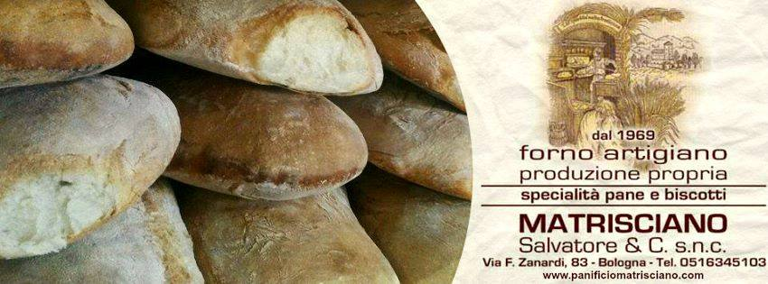

Chi Siamo

Fondato da Salvatore Matrisciano a
Bologna nel 1969, il
Panificio Matrisciano si trova in Via Zanardi 83.
Oggi la
passione e la tradizione vengono portate avanti dai figli Girolamo
e Vincenzo, che continuano a sfornare prodotti genuini e di alta
qualità.
Le Nostre Specialità:
Lasciati conquistare dal profumo del nostro pane fresco, preparato con amore secondo le ricette tradizionali:- Pane Napoletano: Ciambelle e filoni fragranti, il nostro prodotto di punta.
- Pane al Sesamo e Integrale: Perfetti per chi cerca gusto e salute.
- Pane Bolognese: Barilini, crocette, carciofini e rosette, solo un assaggio dei tanti formati disponibili.
- Freselle Napoletane: Disponibili in versione bianca e integrale.
- Pizza al Taglio e Crescente: Ideali per una pausa gustosa, anche ordinabili per feste e rinfreschi.
- Grissini Croccanti e Streghette: Perfetti per ogni occasione.
Dolci e Sfiziosità:
- Pasticcini, Biscotti e Crostate: Piccole dolcezze per tutti i gusti.
- Ciambelle, Raviole e Pinze Bolognesi: Sapori autentici della tradizione.
- Brioches e Bomboloni: Il modo migliore per iniziare la giornata.
Prodotti Alimentari di Qualità:
Non solo pane e dolci! Al Panificio Matrisciano trovi anche una vasta gamma di generi alimentari:- Acqua, Bibite, Succhi di Frutta
- Vino, Pasta, Riso
- Latte, Formaggi, Salumi
- Uova, Marmellate, Fette Biscottate
- Tonno, Caffè
- Patatine, Arachidi e molto altro ancora!
Vieni a trovarci e scopri la bontà dei nostri prodotti, frutto di
una tradizione che si rinnova ogni giorno.